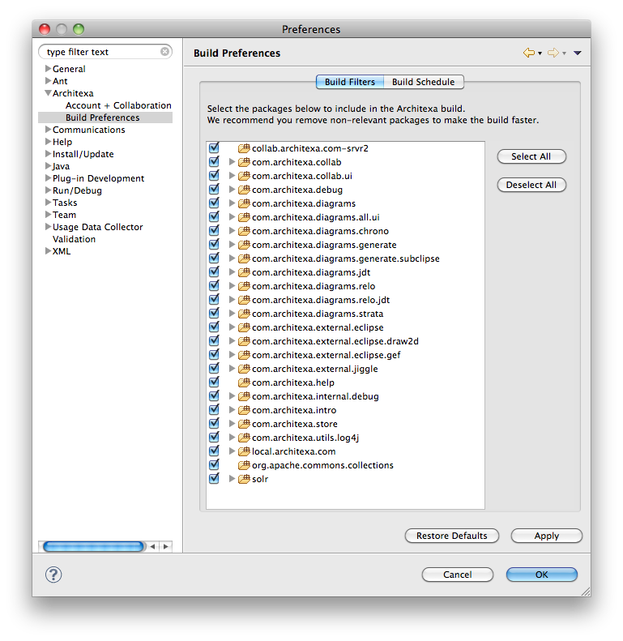
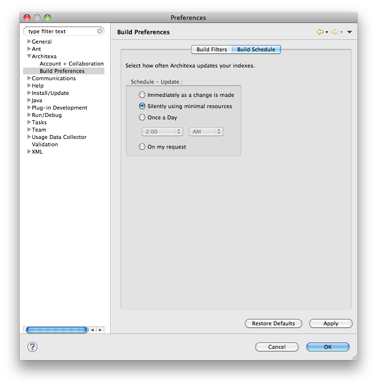

Build Preferences
Architexa analyzes your code to provide the most up to date visualizations. The time taken to finish this indexing process depends on the number of open projects in the workspace. Architexa allows you to select the projects you want to index and the frequency at which the indexes are updated when you make changes to your code. TO Access this preference dialog do the following:
1) Go to "Window > Preferences" to bring up the Eclipse Preferences.
2) Expand the "Architexa" subsection and go to "Build Preferences"
3) The dialog has two sections, the "Build Filters" and the "Build Schedule"
Selecting Projects to Build
In order for Architexa to be most efficient Architexa will need to know which projects and packages are most important for your diagramming needs. Follow these steps to choose specific projects/packages for Architexa to index.
- Select the "Build Filter" option in the dialog

- The dialog will show all the projects in your workspace. You now select the projects you want Architexa to index for you. To improve performance unselect projects you are not working on currently.
- You can also expand the projects and select specific packages to be built.
- Press OK to save the configuration.
Setup Build Schedule
The build schedule determines how often Architexa will update it's index. The details for choosing an option are as follows.
- Select the "Build Schedule" option in the dialog

- There are four options which can be used according to your needs.
- a) Immediately as a change is made: When this option is selected changes made to the code are indexed real time i.e as soon as you change some code Architexa updates its indexes according to the change. This option should be used if you want to be able to see the changes in a diagram as soon as you make those changes
- b) Silently using minimal resources: This is the default option for the indexing procedure. Changes are indexed in an intelligent manner by analyzing system resource utilization and by optimally using the resources.
- c) Once a Day: The user can also fix a specific time when Architexa indexes everyday according to his preferences.
- d) On my request: Architexa indexes code changes only when the user explicitly asks by going to "File > Architexa > Update Indexes"
- Press OK to save the configuration.
---- Your question not answered? Send an email to support@architexa.com ----